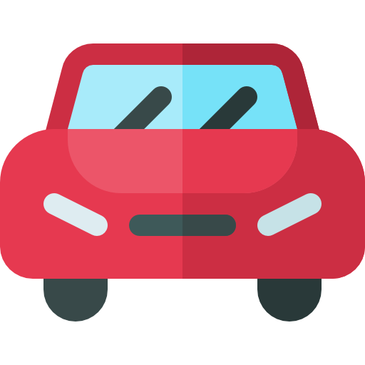
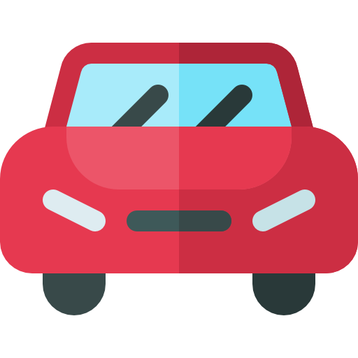
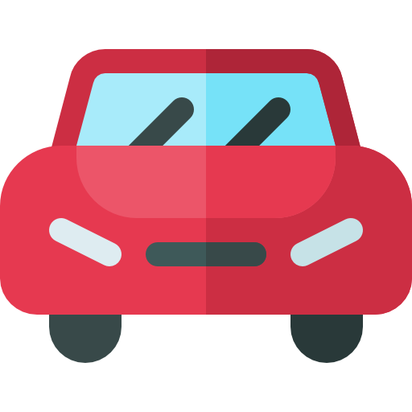

Fastest path finder

Saved presets
No presets
Track no. {{index + 1}}
Mode: {{currentMode}}
Track: {{!isTrackComplete ? "Not ready" : "Ready"}}
Heurestic weight:
Debug:
Simulation time: {{timeTaken ? timeTaken + ' s' : '-'}}
Time history: {{ timeTakenHistory.length ? '' : '-'}}
{{index + 1}}. {{record.time}} s - ({{record.length}})
length
Current car position:
Row: {{ currentCarPosition.row }}
Col: {{ currentCarPosition.col }}
Fastest path preview: